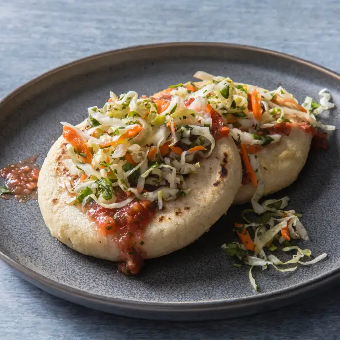

Pupusas

Going have you saying puchica voz!
A traditional entre from El Salvador, that blends together the best parts.
A delicious pupusa consists of chicharon melted together with cheese inside
corn masa, although there are more options on how to eat these delecacies!
Ingredients
Cortido
- ½ head green cabbage, cored and shredded
- 1 small white onion, sliced
- 2 medium carrots, grated
- 4 cups boiling water
- 1 cup distilled white vinegar
- 1 tablespoon dried oregano
- 2 teaspoons kosher salt
Chicharron
- 1 teaspoon vegetable oil
- 1 lb boneless pork shoulder, cut into 1-inch (2-cm) cubes
- 1 teaspoon salt
- 1 medium tomato, diced
- ½ green bell pepper, diced
- 1 small white onion, diced
Pupusa Dough
- 4 cups masa harina
- 2 teaspoons salt
- 3 cups cold water
Filling
- 1 cup grated mozzarella cheese
- 1 cup refried bean, cooked
- 1 tablespoon vegetable oil, for frying
Steps
- Make the curtido: In a large bowl, combine the cabbage, onion, and carrots. Pour the boiling water over the vegetables and toss. Let sit for 10 minutes, then drain.
- In a liquid measuring cup or small bowl, combine the vinegar, oregano, and salt. Pour over the slaw and toss to coat. Once thoroughly mixed, transfer the curtido any any leftover liquid in the bowl to an airtight jar or container.
- Chill for at least 20 minutes in the refrigerator, or chill overnight for best results.
- Make the chicharrón: Heat the vegetable oil in a large pan over medium-high heat. Add the pork shoulder and salt. Cook for 15 minutes without disturbing. If the pork is browning too quickly, reduce the heat to medium. Turn the pork over and let cook on the other side for 10 minutes more, or until crispy and golden brown.
- Transfer the pork to a food processor and add the tomato, green bell pepper, and onion. Pulse until a thick paste forms. The mixture should not be watery. Set aside.
- Make the pupusa dough: In a large bowl, whisk together the masa harina and salt, then add the water. Use your hands to mix until the dough comes together with a clay-like texture.
- Fill a small bowl with water and a bit of oil and set near your work station. You’ll wet your fingers with the mixture as you work to keep the dough from sticking to your hands.
- Take a golf ball-sized portion of dough and roll into a ball, then flatten into an even round.
- Fill the dough round with ½ tablespoon chicharrón paste, 1 teaspoon refried beans, and 1 teaspoon mozzarella cheese. Fold the dough over the filling until it’s completely sealed. Then, pat out the ball between your hands until flat. If the pupusa cracks, patch it with a bit of dough and a little oil. Repeat with the remaining ingredients.
- Heat a large pan or griddle over medium heat. Brush with vegetable oil, then place 2-3 pupusas on the pan and cook for 2-4 minutes, or until the bottoms are golden brown. Flip and cook on the other side for 2-4 minutes more, until golden brown and warmed through. Repeat with the remaining pupusas.
- Serve the pupusas with curtido.
- Enjoy!